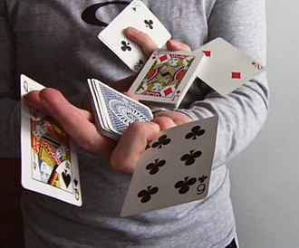

Cardistry

Cardistry is a name given to the performance art of card flourishing. The term is a portmanteau of "card" and "artistry". Unlike card magic, cardistry is meant to be visually impressive and appear very hard to execute. People who engage in cardistry are nicknamed "cardists".
3
Jan
History
2
Jan
Cardistry is a portmanteau of “card” and “artistry.” It involves the use of hands to create cuts, displays, fans, patterns and sequences through the use of playing cards. Various armspreads, cuts, shuffles and springs can be used. The intent is to create a captivating motion and beautiful display. The effects are limited only by the types of cards used, the imagination, and the degree of manual dexterity of the performer. The presentation is typically neither “illusionary” nor purportedly “magic”; rather, it is more like juggling, mime, or similar entertaining activities.
1
Jan